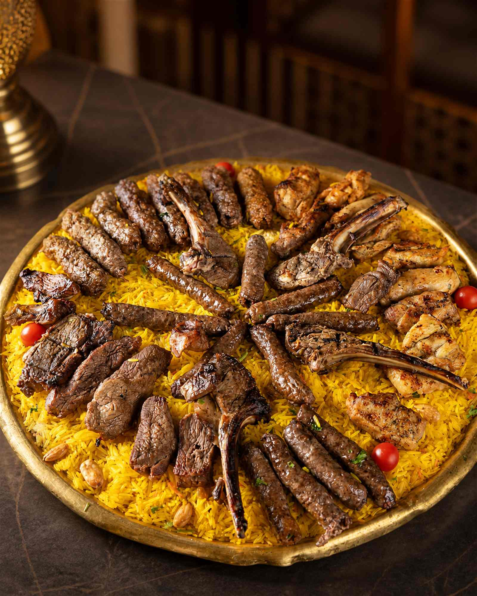
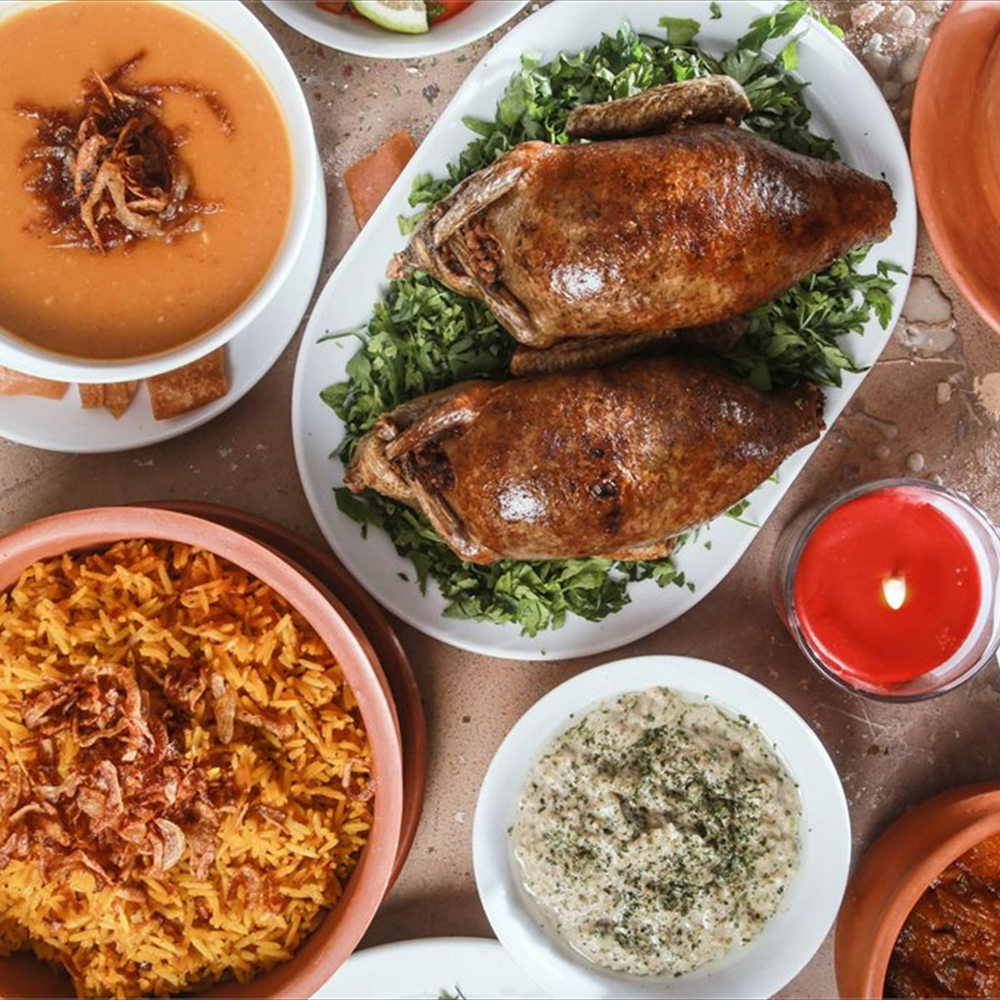
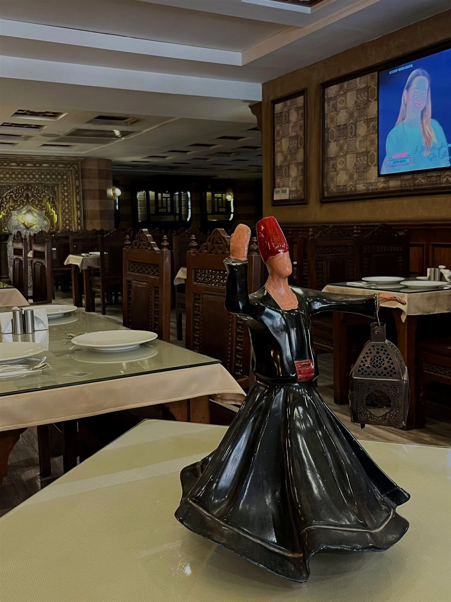
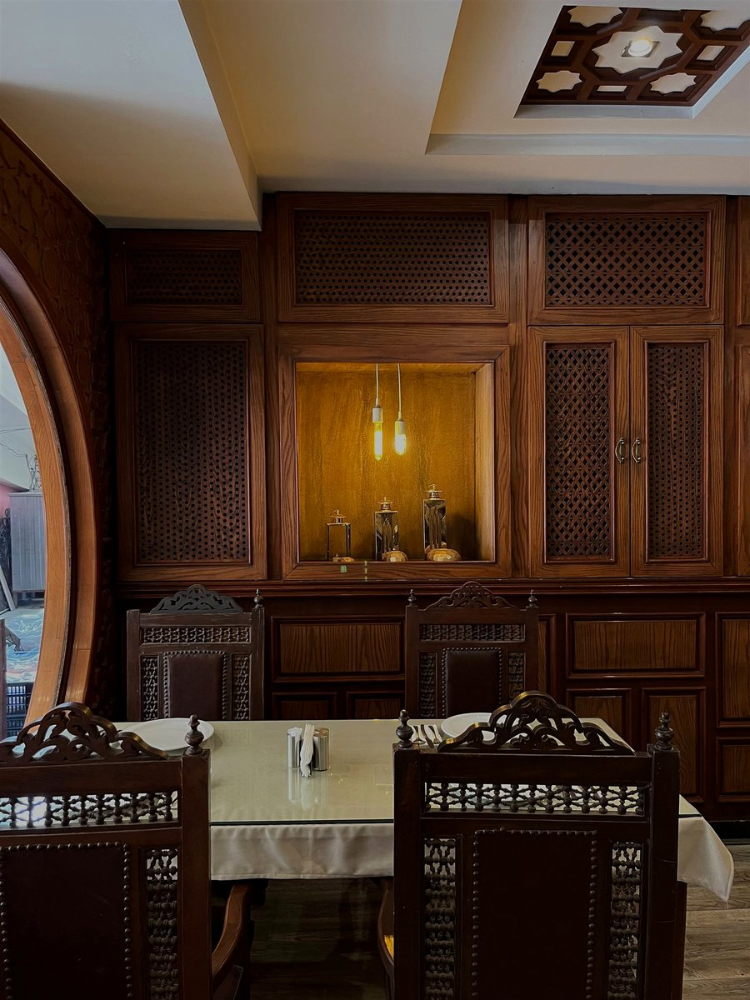
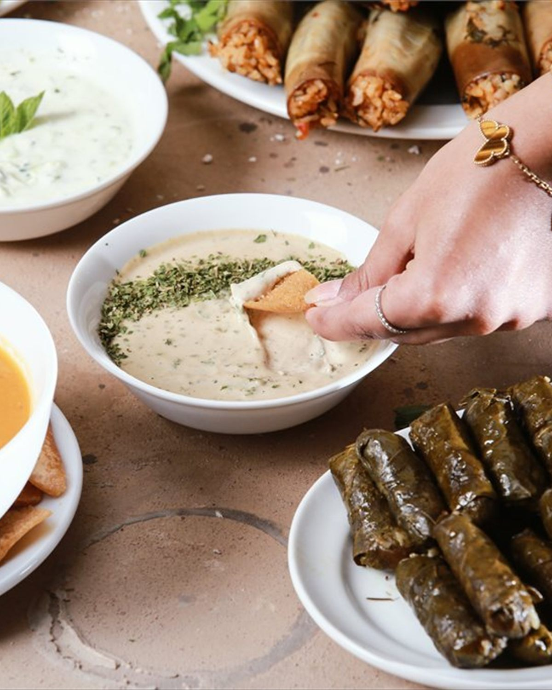

طبخ يومي طازة
الطواجن بتتطبخ على نار هادية كل يوم الصبح. اللي بيخلص بيخلص — مفيش أكل بيات.
طواجن على نار هادية، مشاوي على الفحم، ومحمرات خارجة من الفرن دلوقتي. طبخ يومي طازة، كمية كريمة، وطعم بيوصّلك إحساس مايدة العيلة — سواء في القاعة أو لحد باب بيتك.

الطواجن بتتطبخ على نار هادية كل يوم الصبح. اللي بيخلص بيخلص — مفيش أكل بيات.
الطبق عندنا مليان بجد. أوزان المشاوي معلنة بالجرام في المنيو من غير لف ودوران.
مدينة نصر ومصر الجديدة والتجمع وشيراتون والمناطق القريبة. اطلب على واتساب والأوردر يوصلك سخن ومتغلّف كويس.
عزومات العيلة، السبوع، والاجتماعات. قاعة بديكور شرقي وصواني بالحجز المسبق.
لما تكون العزومة كبيرة، مش وقت الطلبات الفردية. دي الصواني اللي بتتحط في نص السفرة وتكفي الكل.

مشربيات، نجف نحاس، وأرابيسك. قاعة الحضرة اتعملت عشان العزومة تبقى ذكرى مش أكلة.





سبوع، عزومة عيلة، اجتماع شغل، أو مناسبة كبيرة — بنجهّز الصواني والتغليف على مقاس عدد الضيوف. كلمنا قبلها بيوم على الأقل.

بدأنا في مساكن المهندسين بمدينة نصر بفكرة واحدة: إن الأكل المصري مايستاهلش يتقدّم بنص جودة. فطبخنا زي ما بتتطبخ الأكلة في البيت — نار هادية، وقت كفاية، وخلطة بهارات بنعملها بنفسنا.
من ساعتها والحضرة بقت المكان اللي العيلة بتيجي له في المناسبة، والمكان اللي بيوصّل الغدا للشغل، والمكان اللي بيجهّز صواني العزومة الكبيرة. الأكل هو نفسه — بس الطريقة اللي بيوصلك بيها بتفرق.
«وللمذاق ملتقى» — مش شعار، ده اللي بنشتغل عليه كل يوم.
شارع الإمداد والتموين
مساكن المهندسين، مدينة نصر
القاهرة
مفتوح يومياً من غير إجازة أسبوعية.
الأوردرات والحجز والكاترينج كلها على نفس الرقم.
مناطق التوصيل: مدينة نصر، مصر الجديدة، التجمع، شيراتون، والمناطق القريبة — كلّمنا نتأكد من التغطية وسعر التوصيل لمنطقتك.
ابعتلنا على واتساب واحنا نرشّحلك الطلب المناسب لعدد الأفراد — وبنبعتلك المنيو الكامل بالأسعار.